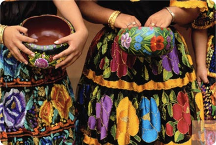

The history of women in Mexico is rooted in a rich tapestry of pre-Columbian traditions and colonial transformation. In Indigenous societies like the Aztecs and Mayas, women held vital roles as healers, weavers, and priestesses, maintaining cosmic and community balance alongside men. The Spanish conquest in 1521 dramatically altered these roles, introducing European patriarchal structures and the Catholic Church, which strictly confined women to the domestic sphere. Despite these limitations, figures like Sor Juana Inés de la Cruz, a 17th-century self-taught scholar and nun, challenged social norms by advocating fiercely for women's right to education and intellectual pursuit.
The 19th and early 20th centuries marked a turning point as Mexican women actively shaped the nation's political identity. During the Mexican War of Independence (1810–1821), women like Leona Vicario served as critical informants, financiers, and strategists. Decades later, the Mexican Revolution of 1910 saw the rise of the soldaderas (or Adelitas), who fought on the front lines, managed logistics, and provided medical care to the revolutionary armies. This era of conflict fueled an early feminist awakening, culminating in the First Feminist Congress of Yucatán in 1916, which laid the groundwork for future demands regarding bodily autonomy, labor protections, and civic rights.
The push for political equality bore major fruit in 1953, when Mexican women finally won the right to vote in national elections. In the decades that followed, the feminist movement expanded its focus to tackle deep-seated issues like labor inequality, reproductive rights, and gender-based violence. The late 20th and early 21st centuries saw a powerful surge in grassroots organizing, characterized by the rise of indigenous leadership like the Zapatista women and nationwide protests against femicide. Today, Mexico’s constitutional mandates for gender parity have successfully transformed the political landscape, leading to unprecedented female representation in government, business, and cultural institutions.